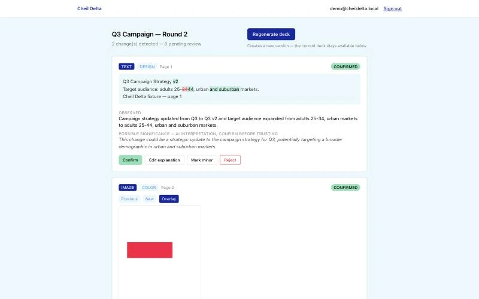
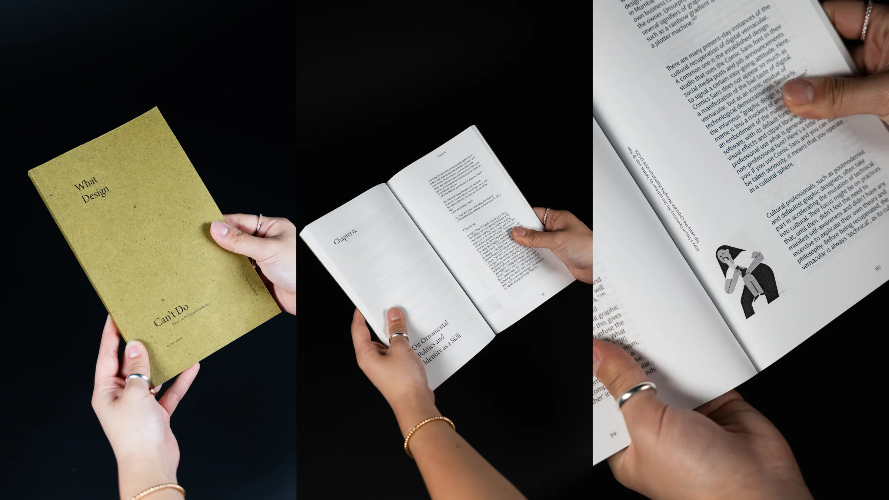

Hi, I’m Dominic. I design experiences that begin with people.Hi, I’m Dominic. I build brands with a personality you can hold.
See my work in
I’m a junior at the Rhode Island School of Design studying Graphic Design with a minor in Computation and Psychology. My work starts with listening; I talk to users, find where the experience breaks, and design the interface that makes the next step feel obvious.
I’ve designed for Providence Promise, Living Outside, and Design for America.
I’m a junior at the Rhode Island School of Design studying Graphic Design. On the branding side, I build the systems people actually touch: campaigns, packaging, type, books, and the characters that carry a brand’s voice.
I’ve designed for Cheil USA (Samsung) and Girl Scouts.
UX Design projectsBranding projects
-

Providence Promise
UX Research · Mobile App · Usability Testing
Families saving for college were chasing updates across WhatsApp, email, texts, and paper mail just to earn what they were owed. Our team designed one app that keeps it all in one place.
- 2 semesters
- Team of 6
- Figma, FigJam, Figma Make
-

Cheil Delta
Product Design · AI Tooling · Workflow
An internal AI tool at Cheil USA that compares two versions of a creative file, explains every change, and builds the review deck only after a person confirms it: a 45-minute task down to 10 minutes.
- About 3 days
- Solo
- Claude Code, Next.js, TypeScript
-

Living Outside
Work in progress
Web Redesign · UX Research · Information Architecture
A website redesign for a youth-led nonprofit working to destigmatize homelessness. The old site hid information several clicks deep; the redesign gives each audience a direct path.
- Jul 2026 – present
- 3 designers
- Figma, FigJam
-

Mr. Zeno
UX/UI · 3D Modeling · Package Design
A toy and an app that give students a low-stakes place to rehearse professional conversations before they have them for real.
- About 1 week
- Solo
- Figma, Cinema 4D, Spline, Illustrator
-

Head in the Clouds
Web UI · Information Architecture · Research
A festival website built around what fans struggle with before and after the music: the heat, confusing passes, and information scattered across Reddit.
- 2 weeks
- Solo
- Figma, Cinema 4D, Illustrator, Photoshop
-

Not Only for Bodega Cats
Interaction Design · Web · Research
Fifty convenience-store images, annotated with five symbols for how people move through a store, made public as a can of cat food and a website where anyone can add their own reading.
- 3 weeks
- Solo
- Figma, Blender, HTML/CSS/JS
-

Cheil USA (Samsung)
Campaign Strategy · App Concept · Art Direction
A social-first campaign that keeps Samsung’s foldables at the center of the conversation, including a lifestyle-simulator app that lets people try each phone’s personality before they own it.
- 6 weeks
- Team of 4
- Illustrator, Photoshop, Figma, generative AI
-

What Design Can’t Do
Editorial Design · Typography · Bookbinding
Silvio Lorusso’s essays, typeset in a three-typeface system and perfect bound by hand: calm for the long read, playful in the margins.
- 3 weeks
- Solo
- InDesign, perfect binding
-

Pocket Sauce
Brand Identity · Illustration · Packaging · Photography
I don’t eat anything without sauce, so I designed a way to carry my favorites everywhere: hand-drawn sauce packets, a brand, and a very messy photo campaign.
- 1.5 weeks
- Solo
- Procreate, Illustrator, Photoshop
-
Letters A through E from the typeface: blue grid strokes filled with small yellow figures


Moving [Type] Face
Type Design
Two typefaces built to disagree, one ruled and one drawn from my own characters, layered until control and personality share the same letter.
- 1 week
- Solo
- Illustrator, pen and paper
-

Head in the Clouds: identity
Also in UX Design
Brand Identity · Merch · 3D Visuals
The festival identity on its own: a cloud-headed mascot with spring florals, Cinema 4D visuals, and merch designed for the day itself.
- 2 weeks
- Solo
- Illustrator, Cinema 4D, Photoshop
-

Bodega Cats: posters and packaging
Also in UX Design
Poster · Packaging · 3D
The collection made public: 24 × 36 in posters and a cat food can modeled in Blender, down to the label.
- 3 weeks
- Solo
- Illustrator, Blender